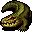

アリゲーター Alligator
英語版 CrawlWiki の記事「Alligator」(0.31 向け、2024-10-23 版)の翻訳です。原文の著者は編集履歴をご覧ください。
この記事は 0.31 の時点の内容で、最新の 0.34 とは違うところがあるかもしれません。
| アリゲーター l  | |
|---|---|
| HP | 40-83 |
| HD | 12 |
| XP | 842 |
| 速度 | 12 (泳ぎ: 80%) |
| AC | 4 |
| EV | 9 |
| 意志力 | 40 |
| 攻撃1 | 27 (噛みつき: 引きずり) |
| 攻撃2 | 14 (尻尾の一撃: 通常)
|
| 耐性 | rDrown |
| 弱点 | なし |
| 生息地 | 水陸両生 |
| 知能 | 動物並み |
| 使用 | 何も使わない |
| 分類 | 生物 |
| 体格 | 大きい |
| 種類 | 巨大トカゲ、アリゲーター |
| フラグ | 冷血 |

| 鋭い歯がずらりと並んだ大きな顎で獲物をバリバリと噛み砕く攻撃的なワニ類だ。
「アリゲーターは食事の過ちを犯す。」 |
基本情報
アリゲーターはクロコダイルからぐっと手強くなった相手で、驚くほどの速さと強力な噛みつきで冒険者に襲いかかってくる。沼に出る。ヴォールトの外では、20% の確率でもう 1 匹のアリゲーターを連れている。
小技
- 意志力はばかにならないが、腕の立つ呪術師なら破れる。また元素の耐性を何も持たないうえに冷血なので、妖術もそれなりに効く。霊視も持たないので、透明化も有力な手だ。
- 踏みつけと同じく、まわりに場所があると、アリゲーターに階段から引きずり出されたり浅い水脈に引きずり込まれたりするので気をつけること。